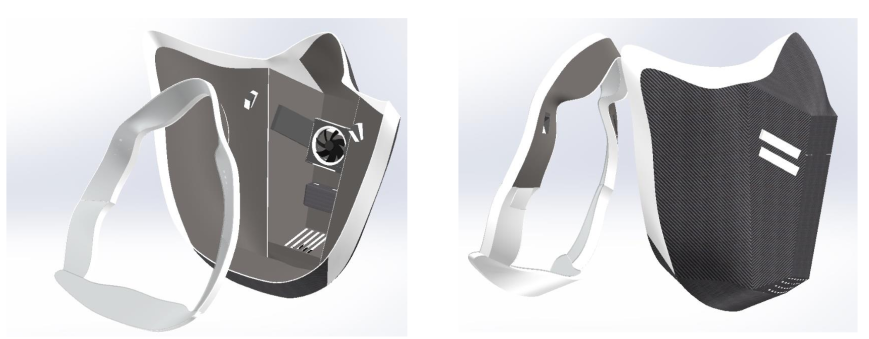
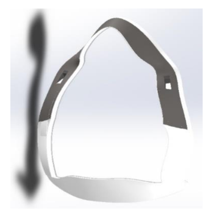
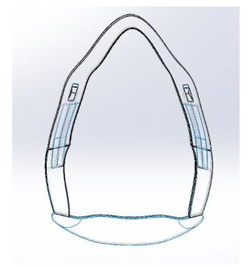
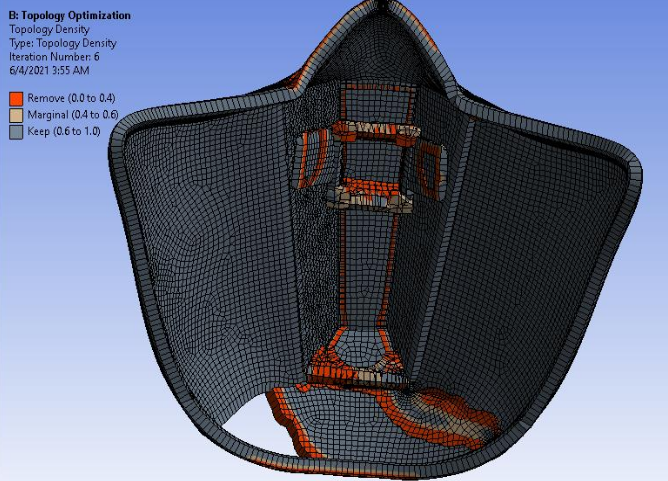

Robot System Design

Overview
The Cybermask project was developed in response to the challenges posed by traditional masks during the COVID-19 pandemic. This high-tech mask integrates advanced features to improve comfort, safety, and usability.
Air Ventilation and Filtration: The Cybermask incorporates an innovative air ventilation system with two fans: one to draw in air from outside and another to expel air from inside. The fans, which can be controlled via a smartphone, help regulate the temperature inside the mask, preventing heat buildup and fogging. Both fans are equipped with HEPA filters, capable of capturing particles as small as viruses, ensuring that the air entering and leaving the mask is clean and safe.

Frame and Fixation: The mask features a unique frame design divided into two parts, connected by a spring, to ensure a secure and comfortable fit without the need for straps. This design allows for free mouth movement and maintains a tight seal to protect against airborne particles. The frame’s modular design also allows for easy attachment and detachment from the mask body.
 
Material and Design Optimization: The mask’s components were designed and optimized using SolidWorks, with particular attention to the material selection and structural integrity. A static study was conducted to ensure the mask’s durability under various forces, and a topology study helped reduce unnecessary material, making the mask lighter without compromising its strength.

For more details, you can view the project report:
Project information
- Category Academic project
- Client Swinburne University of Technology
- Project date March 2021
- Visit Website